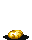

| STAGE 3-A To Ride a Juggernaut!! |
| 져거노트 탑승!! |
| Juggernaut : (인도 신화에서 비시누(Vishnu)신의 제8 화신인) 크리시나(Krishna) 신상(神像) / 거대한 괴물,전차,군함 (일어판 - 重戰車 · ジヤガ―ノ―ト: 중전차 져거노트) |
스테이지 구조가 비교적 단순하고 길이가 짧으며
선택지에서 묘사했던 것 만큼 적이 그리 많이 나오는 것은 아니다.
열쇠를 많이 모을 수 있으며 헬하운드에게서 로드를 얻을 수 있고
시프가 있다면 LB오일도 모을 수 있다는 것이 베수비아 강과의 차이점이다.
스테이지 구조
총 6대의 차량으로 이루어져 있고 그 중 1~4번째 차량은 일반 몬스터가 나오는 구역이고 5번째 차량은 보스가 묶여있는 차량, 6번째 칸은 보스와 싸우게 되는 차량이다.차량 내의 적을 전부 물리치면 다음 차량이 와서 부딪치면서 건너갈 수 있게 되는데 다음 차량으로 이동할 수 있게 되면 이 전칸에 있던 아이템들은 전부 사라지니 줏으려면 미리 줏어둬야 한다.
첫번째 차량 |
운행중인 열차에 달려가면서 탑승하는 일행
처음 칸에는 고블린 세마리가 앉아있고 한마리 이상을 제거하면
공중에서 새로운 고블린 세마리가 나온다 (인원수에 상관없이 똑같다).
이들 고블린 6마리만 상대하면 되는 간단한 구역이다.
하지만 고블린에게 포위당하지 않도록 처음에 확실히 제압하는게 좋다.
두번째 차량 |
게임 전체를 통틀어서 유일하게 HP가 많은 보우 놀이 등장하는 구역이다.
이녀석들을 잡고 나면 고블린의 지원사격과 액스 놀 콤보가 이어진다.
바닥에 열쇠와 500sp/100sp가 있으니 줍도록 하자.
등장하는 적 - 보우 놀과 액스 놀을 전부 물리쳐야 다음 칸으로 진행 할 수 있다.
| 1인 | 오른쪽에서 돌팔매질 하는 고블린 x4 / 앉아있는 보우 놀 x3 → 보우 놀을 전부 물리치면 왼쪽에서 돌팔매질 하는 고블린 x4 → 왼쪽에서 오일던지는 고블린 x4 / 공중에서 액스 놀 x2 → 액스 놀을 전부 물리치면 공중에서 액스 놀 x2 / 왼쪽에서 오일던지는 고블린 x4 |
| 2인 | 1인 플레이와 똑같다. |
| 3인 | 오른쪽에서 돌팔매질 하는 고블린 x4 / 앉아있는 보우 놀 x3 → 보우 놀을 전부 물리치면 왼쪽에서 돌팔매질 하는 고블린 x4 → 왼쪽에서 오일던지는 고블린 x4 / 공중에서 액스 놀 x3 → 액스 놀을 전부 물리치면 공중에서 액스 놀 x3 / 왼쪽에서 오일던지는 고블린 x4 |
| 4인 | 3인 플레이와 똑같다. |
세번째 차량 |
이곳은 헬 하운드만 나온다. 시프가 있다면 LB오일을 훔쳐내는 것도 좋다.
이곳 바닥에 열쇠와 스피드 포션, 슈퍼 힐링 포션이 놓여있다.
3인 플레이 이상이라면 힐링 포션이 추가로 놓여 있다.
등장하는 적
| 1인 | 헬 하운드 x2 → 시간이 약간 지나면 왼쪽에서 헬 하운드 x1 |
| 2인 | 헬 하운드 x3 → 시간이 약간 지나면 왼쪽에서 헬 하운드 x1 |
| 3인 | 헬 하운드 x3 → 시간이 약간 지나면 왼쪽에서 헬 하운드 x2 |
| 4인 | 헬 하운드 x3 → 시간이 약간 지나면 왼쪽에서 헬 하운드 x3 |
네번째 차량 |
이곳은 고블린과 헬 하운드가 나온다.
고블린은 비교적 한곳에 뭉쳐나오니 돌아다니기전에 초전부터 제압하는게 좋다.
이곳 바닥에 열쇠와 라이트닝 볼트 반지가 있다. 반지는 꼭 줏어두자.
등장하는 적
| 1인 | 위쪽에서 고블린 x3 → 한마리만 남으면 아래쪽에서 고블린 x3 → 한마리만 남으면 공중에서 헬 하운드 x2 → 한마리만 남으면 위쪽에서 고블린 x2 + 아래쪽에서 고블린 x2 |
| 2인 | 위쪽에서 고블린 x3 → 한마리만 남으면 아래쪽에서 고블린 x3 → 한마리만 남으면 공중에서 헬 하운드 x2 + 왼쪽에서 헬 하운드 x1 → 한마리만 남으면 위쪽에서 고블린 x3 + 아래쪽에서 고블린 x3 |
| 3인 | 2인 플레이와 똑같다. |
| 4인 | 2인 플레이와 똑같다. |
|
다크 워리어가 묶여 있고 고블린 한마리가 뛰어온다.
"이 야수를 풀어주고 싶지는 않지만 선택의 여지가 없는 것 같군."
(일어판)
"こいつだけは解きはなしたくはなかったが、しかたがない。"
"이녀석 만큼은 풀어주고 싶지 않았지만 어쩔 수 없다."
번개 한줄기가 내려치며 나무로 된 이 칸은 부셔진다.
다크 워리어가 텔레포트를 하면서 나타난다.
워낙에 가드를 잘하니 그냥 공격만 해서는 절대로 잡을 수 없다. 게다가 HP가 줄어들면 속도가 빨라지는데 익숙치 않은 플레이어들은 무척 고전할 수 있다.
다크 워리어가 행동을 취하기 시작하면 스켈레톤들이 나오기 시작하니 움직이기 전에 제압을 하는게 좋다. 보통 단검 → 오일 → 해머 순으로 정렬이 되어 있으니 단검을 던져서 가드를 풀고 공격을 넣자. 그리고 오일을 던지고 다운 공격을 반복해서 HP를 줄이도록 한다. 다 썼으면 마지막으로 해머를 던져서 마무리 하자.
클레릭은 단검이 없지만 스트라이킹, 블레스를 통해 한번에 더 많은 데미지를 입힐 수 있고 또한 컨티뉴얼 라이트를 투척무기 대신 쓸 수 있다. 드워프의 경우 해머만 사용해도 슬래쉬와 대공기를 통해서 더 쉽게 제압할 수 있다. 매직 유저가 좀 힘들 수 있는데 투척 무기를 다 쓴 다음에 콜드 완드를 다운공격용으로 적절히 활용 해 주는게 좋다. 이후에 레벨이 오르니 남은 주문을 다 쓰는 것도 나쁘지 않다.
다크 워리어는 쓰러졌다가 일어날 때 텔레포트 하는 경우가 많은데 쓰러진 다크 워리어의 발치에 서 있어야 제자리에서 텔레포트한다. 괜히 다른 곳에 있어서 다크 워리어가 다른 곳으로 텔레포트하게 하지 않아야 한다.
3~4인 플레이시 시작부터 속도가 빨라진다. 어설프게 공략하려고 했다가는 뭐 해보지도 못하고 전멸 할 수 있으니 투척무기를 이용해서 차근차근 공격하도록 하자. 오일을 던지고 다운 공격을 반복하는 것이 가장 무난하다.
▶ 클리어 후 레벨이 올라가는 클래스 : 모든 클래스
상점 |
스테이지 3-A를 클리어하면 최초로 상점을 방문하게 된다.
아이템 구입 가격
| ※ 아이템 교환 |  | → |
'아울베어의 알'을 가지고 있을 경우 대화를 하면 '원더 에그'로 바꿔준다.
오로지 이 상점에서만 바꿀 수 있다는 점을 명심해야 한다.
좀 더 자세한 정보는 상점 정보를 보기 바란다. ▶ 상점 정보 보기